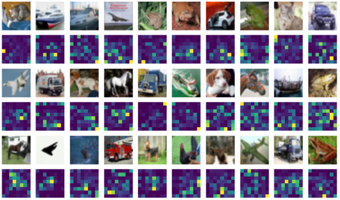

Introduction
The introduction of Transformer models in the landmark 2017 paper “Attention is All You Need”[1] by Vaswani et al. revolutionized deep learning by introducing self-attention mechanisms. This design allows models to dynamically weigh the importance of tokens relative to each other, independent of their positional distance in a sequence. By capturing long-range dependencies effectively and enabling parallel processing, Transformers significantly outperform sequential models like RNNs and LSTMs in both efficiency and scalability.
However, a key limitation of Transformers is their lack of inherent positional awareness, requiring positional encodings to capture spatial or sequential relationships in input data. Since the introduction of Transformers, various positional encoding methods have been developed, each offering distinct trade-offs in representing spatial relationships and influencing performance. Despite this, comparisons of the ability of different positional encodings to generalize and mitigate noise in multi-dimensional spaces remain largely uncharted. Furthermore, comparative analyses on how different encodings adapt to varied tasks and manage spatial complexity are limited. Addressing this gap is essential, as the design of effective positional encodings directly affects the robustness and precision of models in real-world applications such as autonomous systems, augmented reality, and robotics.
This study aims to address this gap by conducting a comparative analysis of three prominent positional encoding methods —Learned, Sinusoidal, and Fourier— in the context of 2D and 3D spatial classification tasks. Using the CIFAR-10 and ScanObjectNN datasets, we evaluate their performance on transformer architectures in tasks demanding high generalization and noise robustness. By analyzing both quantitative results and visualizations, we seek to provide actionable insights into how positional encodings impact model performance in real-world applications while paving the way for future innovations.
Related Work
This literature review discusses key studies on the topic of various positional embedding methods for 2D and 3D image classification in transformer models. The goal is to identify trends and gaps in research.
Sinusoidal Positional Encoding
The method for positional encoding proposed in the original “Attention is All You Need” paper by Vaswani et al. uses sinusoidal functions. In the paper, it is limited to 1D data such as words in a sentence. Specifically, it works by, for a given position i in a sequence and a particular dimension d of the embedding, defining the positional encoding using the sine and cosine functions at different frequencies as such:
This approach was later adapted for computer vision tasks by Dosovitskiy et al. in “An Image is Worth 16x16 Words: Transformers for Image Recognition at Scale” (2020) [3]. Here, images are divided into patches, treated as sequential tokens, and encoded using 2D sinusoidal functions. The encodings represent each patch's position along the x- and y- axes, enabling spatial awareness within the Transformer architecture for image classification tasks.
Learned Absolute Positional Encoding
In the paper “Attention is All You Need” by Vaswani et al. (2017), the authors also discuss their experimentations with using a learned positional embedding design. In contrast to the predefined sinusoidal method, learned positional embeddings treat positions as trainable parameters, optimized during model training via traditional backpropagation. This flexibility allows the model to adapt positional representations to task-specific needs. For example:
- BERT (Bidirectional Encoder Representations from Transformers) (Devlin et al., 2018) [2]: BERT, a natural language processing model, uses learned absolute positional embeddings. These embeddings are added element-wise to word embeddings, creating a combined representation that incorporates both semantic and positional information. During training, these positional embeddings are optimized alongside other model parameters, improving adaptability to diverse text tasks.
- 3DPPE (3D Point Positional Encoding) (Wang et al.) [6]: This method extends learned positional embeddings to 3D object detection tasks. The embeddings represent the spatial positions of 3D points (e.g., coordinates x,y,z) and are learned directly from the data, enabling robust handling of multi-view spatial data.
Fourier Features for Positional Encoding
The paper “Learnable Fourier Features for Multi-Dimensional Spatial Positional Encoding” by Li et al.[4] extends the concept of positional encoding to multi-dimensional spaces, such as 2D and 3D spatial data. Fourier features map input positions into a higher-dimensional space using sine and cosine functions with learnable parameters like frequencies and phases. Unlike fixed-frequency sinusoidal encodings, Fourier features allow the model to optimize encoding parameters during training. This flexibility makes Fourier features particularly well-suited for applications requiring detailed spatial representations, such as point cloud processing or multi-dimensional image reconstruction. By leveraging the expressiveness of Fourier-based encodings, models can achieve richer and more adaptive representations of spatial relationships.
While several studies have explored innovative positional embedding strategies, few have directly compared their performances in 2D and 3D image classification. This blog addresses that gap by examining how Learned, Sinusoidal, and Fourier embeddings impact Transformers' accuracy, noise robustness, and generalization, particularly in spatially intensive applications.
2D Experiments
Our research aimed to evaluate the impact of various positional encoding methods on transformer performance in both 2D and 3D environments. We conducted a series of experiments to compare the effectiveness of Learned Positional Encoding, Sinusoidal Encoding, and Fourier Encoding.
For our 2D experiments, we utilized the widely recognized CIFAR-10 dataset, which consists of 60,000 low-resolution images (32x32 pixels) distributed across 10 classes. The dataset is split into 50,000 training and 10,000 testing images. CIFAR-10’s simplicity makes it a baseline for evaluating Transformer performance in tasks with moderate spatial relationships. We designed a custom Transformer model, as illustrated in Figure 1 below. The architecture was adapted for 2D image data by dividing each image into patches, which were then treated as input tokens. Positional encodings were applied to these token embeddings before passing them into the self-attention mechanism.
The training parameters were:
- Epochs: 10.
- Batch Size: 256.
- Learning Rate: 0.001.
- Loss Function: Cross-entropy loss.
We chose cross-entropy loss due to its suitability for classification tasks, which aligns with the nature of the CIFAR-10 dataset. The model underwent validation after each epoch to assess its performance and generalization capabilities. This setup allowed us to directly compare the impact of different positional encoding methods on the transformer's ability to process and classify 2D image data. By maintaining consistent hyperparameters across all encoding methods, we ensured a fair comparison of their relative effectiveness in the context of our custom transformer architecture.
2D Results
Comparison of Training and Validation Accuracies for 2D data
We first plotted the training and validation accuracies of the transformer with each of the three encodings. Figure 2 below shows similar trends among all three encodings that while the training accuracy went up consistently throughout 10 epochs, the validation accuracies plateaued before the epochs finish, which indicate that further training would lead to overfitting.
We then compared the training and validation accuracies of the transformer with these three encodings across the 10 epochs (figure 3). With all three encodings, the transformer achieved high training accuracy after 10 epochs (88.9% for Learned, 86.9% for Sinusoidal, 88.2% for Fourier).
2D Validation Performance
The validation results in figure 4 revealed more pronounced differences between the encoding methods. Fourier encoding emerged as the superior performer, achieving a validation accuracy of 69% after the full training cycle. Sinusoidal encoding followed with a respectable 66.9% accuracy, while Learned encoding showed the most limited performance at 59.4%.
Key Observations:
- Fourier encoding demonstrated the best generalization capability in 2D data.
- Learned encoding exhibited early plateauing behavior in validation performance.
- There is a consistent gap between training and validation accuracies across all positional encoding methods.
The early plateauing of the Learned encoding's validation accuracy suggests inherent limitations in its ability to generalize beyond the training data. This pattern is clearly visible in the convergence plots, where the validation curve for Learned encoding flattens more rapidly than its counterparts.
Visualization Deep Dive
Our investigation expanded beyond numerical performance metrics to qualitatively analyze the impact of different positional encoding methods. This was achieved through attention map visualizations using selected CIFAR-10 images.
Case 1: High Contrast, Simple Background
In the first scenario, we analyzed images where the object of interest is highly distinguishable from a simple background. The example shown in Figure 5 displays a bird with distinct color contrast against its surroundings. The attention maps reveal that all three encoding methods focused primarily on the bird. However, Fourier encoding demonstrated the most precise alignment with the bird's shape, followed by sinusoidal encoding. Learned positional encoding performed the worst, failing to accurately capture the bird's contour.
Case 2: Low Contrast, Simple Background
The second scenario involved an object with low color contrast relative to a simple background (Figure 6). In this case, Fourier encoding again exhibited the sharpest focus on the object, with sinusoidal encoding as the second best. Learned positional encoding struggled to isolate the object, showing significant distractions from background noise.
Case 3: Low Contrast, Complex Background
Lastly, we explored a challenging scenario where the object had low contrast with a moderately complex background (Figure 7). Here, all three encodings showed reduced attention accuracy, with the highest attention often misdirected to the high-contrast areas of the background. Despite this, Fourier encoding remained the least affected by background distractions, exhibiting relatively better focus on the object (a frog).
Thus, this visualization underscores the superior spatial alignment and robustness of Fourier positional encoding across varying levels of object-background complexity.
An example of the full attention heatmap has been displayed below.
3D Experiments
The data for our 3D experiments on positional encoding methods came from the ScanObjectNN dataset, a benchmark for real-world 3D object classification. Unlike synthetic datasets, ScanObjectNN is derived from real 3D scans, and thus includes characteristics such as noise from the surrounding environment, occlusions caused by partial visibility of objects, and variability in object sizes, orientations, and point distributions.
The dataset consists of 15 object categories, such as chairs, tables and cabinets, and offers multiple configurations, from objects with background noise and segmented objects. Because of this, it is very valuable data in evaluating the robustness and effectiveness of 3D models in point-cloud classification. Within the ScanObjectNN dataset, each object is represented as a point cloud and contains 2048 individual points.
As can be seen in the image above, the scans include a significant amount of noise in addition to gaps in the objects. This makes it harder for the model to learn.
The training parameters for each embedding type (Fourier, Sinusoidal, and Absolute Learned) were:
- Epochs: 20.
- Batch Size: 32.
- Learning Rate: 1x10^-4
- Loss Function: Cross-entropy loss.
- MLP dimension: 256.
This batch size was as high as possible to maintain 2048 points per point cloud without running out of memory. This has better validation results than decreasing the points per point cloud but increasing the batch size. Furthermore, for runtime and memory efficiency, we limited our experiments to a training size of 4644 point cloud objects and validation size of 1136 point cloud objects.
While sinusoidal encoding was originally designed for 1D or 2D grids, it can still be applied to 3D point clouds by encoding the 3D coordinates (x, y, z) in a similar way. For each point in the cloud, we created a sinusoidal encoding of its position by mapping the (x, y, z) coordinates to sinusoidal functions with different frequencies. This allows the transformer to learn the spatial relationships between different points in the cloud, even if the points are unordered.
The architecture:
3D Results
Comparison of Training and Validation Accuracies for 3D data
We first plotted the training and validation accuracies of the transformer with each of the three encodings. The figure 11 below shows similar trends among all three encodings that while the training accuracy went up consistently throughout 20 epochs, the validation accuracies plateaued before the epochs finish, which indicate that further training would lead to overfitting.
We then compared the training and validation accuracies of the transformer with these three encodings across the 20 epochs (figure 12). With all three encodings, the transformer achieved a relatively high training accuracy after 20 epochs (86% for Learned, 82% for Sinusoidal, 75% for Fourier).
3D Validation Performance
The validation results revealed more pronounced differences between the encoding methods. Sinusoidal and Fourier encoding emerged as the superior performers, achieving a validation accuracy of 65.58% and 67.17% respectively after the full training cycle. Meanwhile, learned encoding showed the most limited performance at only 50.44%.
As can be seen in the above graph, up until epoch 16 Sinusoidal outperformed Fourier. However, in the long run, Fourier Positional Encodings have the highest validation accuracy. Throughout our testing, we found that the batch size and data size had a big impact on both Fourier's and Sinusoidal's accuracy, but we were limited in expanding this due to the lack of resources. We would expect for Fourier to outperform Sinusoidal in a big dataset.
Key Observations:
- Fourier positional encodings, followed closely by Sinusoidal encodings, performed the best on 3D point cloud data. This matches the 2D experiments, where Fourier encoding method was also superior. We expect this to be because Fourier encodings can focus on representing very fine-grained features, which is relevant for the highly textured surfaces of the dataset of real-world 3D scans. However, with this smaller dataset, sinusoidal encodings also captured the necessary spatial relationships effectively.
- Absolute Learned Positional encoding exhibited early plateauing in validation performance, similar to the 2D results. This behavior is expected in 3D data, as these encodings tend to overfit to noisy training patterns. They struggle to adapt to the variability and complexity of real-world datasets like ScanObjectNN, which are inherently noisy.
- A consistent gap between training and validation accuracies across all positional encoding methods, although the gap is particularly significant between the training and validation results of the Absolute Learned Positional encoding.
Deep Dive
When examining the 3D performance of the different positional encoding methods on the ScanObjectNN dataset, several key trends emerge. While all methods struggled with certain categories, their unique strengths and weaknesses highlight the nuances of each encoding approach.
The confusion matrices of the classifications of the validation data below show what the predicted versus true categories of the objects in the dataset were show the following results:
The labels corresponding to object type: bag: 0, bin: 1, box: 2, cabinet: 3, chair: 4, desk: 5, display: 6, door: 7, shelf: 8, table: 9, bed: 10, pillow: 11, sink: 12, sofa: 13, toilet: 14.
Fourier and sinusoidal encodings both struggled significantly with the third category, "cabinet." This challenge likely stems from the high intra-class variability within this category. Cabinets often appear in various sizes, orientations, and levels of occlusion, which may disrupt the spatial regularities that Fourier and sinusoidal encodings rely on. In particular, these encodings may fail to capture finer-grained spatial relationships when multiple distinct but similar categories exist, such as shelving units.
Both the two objects below were considered of type “cabinet”.
It was often predicted to be 8, which is the shelving unit:
For the Sinusoidal Positional Encoding, the confusion matrix reveals challenges in distinguishing between similar object classes. Category 9 (table) is often confused with category 5 (desk). Furthermore, category 14 (toilet) is commonly misclassified as category 4 (chair). These patterns suggest that sinusoidal encodings struggle to differentiate between structurally similar objects. In contrast, Fourier Positional Encoding demonstrates improved performance in distinguishing between table (5) and desk (9), suggesting better handling of nuanced spatial differences. However, it continues to struggle with misclassifications between toilet (14) and chair (4). This persistent issue may partially stem from the smaller sample sizes for these categories in both the training and test datasets, which likely hinder the model's ability to generalize effectively.
Absolute learned embeddings struggled more evenly across all categories. The 35% gap between the training and validation accuracy suggests a tendency to overfit to the noise present in the training data, leading to poor generalization on the validation set. While learned embeddings are flexible and adaptable, their reliance on the training data distribution may limit their robustness to real-world variability.
Limitations
While attention heatmaps could provide additional insights into model behavior on 3D data, generating these visualizations proved challenging within the scope of this study. We also had to limit the batch and data size due to lack of available memory and other resources. This represents a valuable direction for future work. Despite the absence of attention visualizations for 3D data, the performance analysis highlights key distinctions in how positional encodings handle noise, variability, and spatial structure in point cloud classification.
Conclusion
Our analysis demonstrates the superior performance of Fourier positional encoding compared to Learned and Sinusoidal encodings for both 2D and 3D spatial tasks across the selected datasets, while also revealing the limitations of all three encoding methods when confronted with noisy backgrounds or low-contrast objects. This finding underscores the importance of encoding choice in spatial tasks and highlights areas for future improvement in positional encoding techniques.
Key Findings:
- 2D images classification: Fourier encodings more consistently attributed attention to the object rather than the background compared to learned and sinusoidal encodings, even when the object and background had similar colors. This demonstrates its ability to capture precise spatial relationships and mitigate distractions given the model’s ability to optimize encoding parameters during training
- 3D images classification: Fourier encoding proved to be the most robust against noise distractions, outperforming learned and sinusoidal methods in scenarios involving complex spatial data and high-dimensional inputs. However, challenges with intra-class variability (e.g., distinguishing cabinets from shelving units) highlight the limitations of fixed-frequency methods in capturing fine-grained distinctions. Furthermore, learned encodings struggled significantly, overfitting to noisy patterns due to their reliance on training data.
- Generalization: Learned positional encoding exhibited the poorest generalization, which can be attributed to its fixed encoding lengths. This limitation hinders its ability to adapt to diverse spatial configurations and tasks.
Additionally, our experiments revealed that 3D tasks demand smaller batch sizes and additional training epochs compared to 2D tasks. This highlights the increased computational complexity and the need for careful hyperparameter tuning in 3D applications.
Next Steps:
To build on these findings, we propose the following avenues for future research:
- Exploration of Hybrid Positional Encodings: Investigate the potential of hybrid methods that combine the strengths of absolute and relative positional encodings. For example, Rotary Position Embedding (RoPE), introduced by Su et.al.[5] and Hyb-NeRF, introduced by Wang et.al.[7], would fall under this category.
- Parameter Optimization: Conduct extensive fine-tuning of model parameters, such as learning rates, batch sizes, and frequency ranges for Fourier features, to maximize performance across different tasks and datasets.
- Understanding Performance Drivers: Perform in-depth analyses to identify the specific factors contributing to the observed performance differences. For instance, studying how frequency ranges, noise levels, or data sparsity affect the encodings' robustness could provide actionable insights for model improvement.
By addressing these areas, we aim to refine positional encoding techniques further and unlock their full potential in tasks involving 2D and 3D spatial reasoning. The insights gained from this study and future research will contribute to the development of more efficient and accurate transformer models for a wide range of spatial applications, from computer vision to 3D object detection and beyond.
References
- [1] Vaswani, A., Shazeer, N., Parmar, N., Uszkoreit, J., Jones, L., Gomez, A. N., Kaiser, Ł., & Polosukhin, I. (2017). Attention is all you need. Advances in Neural Information Processing Systems, 30
- [2] Devlin, J., Chang, M. W., Lee, K., & Toutanova, K. (2018). BERT: Pre-training of deep bidirectional transformers for language understanding. arXiv preprint arXiv:1810.04805
- [3] Dosovitskiy, A., Beyer, L., Kolesnikov, A., Weissenborn, D., Zhai, X., Unterthiner, T., Dehghani, M., Minderer, M., Heigold, G., Gelly, S., Uszkoreit, J., & Houlsby, N. (2020). An image is worth 16x16 words: Transformers for image recognition at scale. arXiv preprint arXiv:2010.11929
- [4] Li, Y., Si, S., Li, G., Hsieh, C. J., & Bengio, S. (2021). Learnable Fourier features for multi-dimensional spatial positional encoding. arXiv preprint arXiv:2106.02795
- [5] Su, J., Lu, Y., Pan, S., Wen, B., & Liu, Y. (2021). RoFormer: Enhanced Transformer with Rotary Position Embedding. arXiv preprintarXiv:2104.09864
- [6] Shu, C., Guo, Y., Xu, K., Chen, Z., Ding, E., & Han, J. (2023). 3DPPE: 3D Point Positional Encoding for Transformer-based Multi-Camera 3D Object Detection. Proceedings of the IEEE/CVF International Conference on Computer Vision (ICCV).
- [7] Wang, Y., Gong, Y., & Zeng, Y. (2024). Hyb-NeRF: A Multiresolution Hybrid Encoding for Neural Radiance Fields. In Proceedings of the IEEE/CVF Winter Conference on Applications of Computer Vision (WACV).